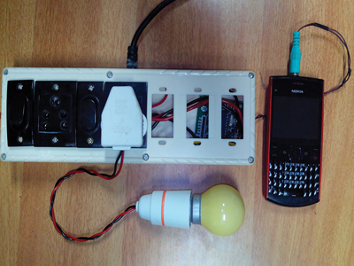

MENU
Skip menuDTMF Based Extension box
controls the extension box with your mobile

Control appliances using DTMF Module.DTMF or duel tone media frequency
decoder detects the DTMF tones and generates the binary sequence corresponding
to the key pressed in a DTMF keyboard or a mobile keypad.These binary codes
are send to arduino. Arduino switches the AC supply and controls the extension box
DTMF Module Poster